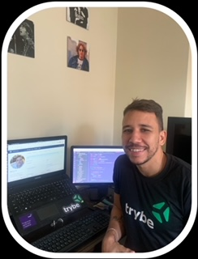

Olá, me chamo Márcio Luiz e sou desenvolvedor web certificado pela Trybe e estudante de ciência da computação na UERJ. Iniciei minha carreira acadêmica na área de química industrial na UFRJ e trabalhei por alguns anos em indústria farmacêutica. Em 2019 resolvi dar uma virada de chave na minha vida e entrei com tudo em uma transição de carreira para área de tecnologia, onde, hoje, me sinto feliz e realizado.
Ao longo dessa minha trajetória de estudos, me aprofundei em diversas ferramentes importantes no mercado. Cito como as principais: Node.js Express Typescript MySQL
Em front-end pude ter contato com diversas ferramentas utilizadas pela maioria das empresas de tecnologia. Cito como as principais: HTML CSS React Redux